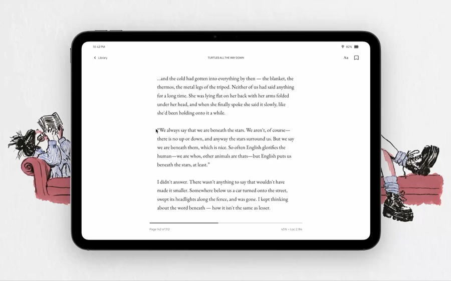

Everything the site is built from, in one place. Typography and colour each have options to choose between; once they’re picked, they become the tokens every page uses.
Overview
Quiet window, loud world. One white page held up against a photograph, photos treated like prints, and type and colour that step back so the work can lead.
Decisions
Decided
Typography: Sans + serif accent
Geist for headlines and text; the phrase each headline ends on, and pull quotes, in Instrument Serif italic. Twelve roles, now the tokens every page uses.
Decided
Colour: Sea Glass
A deep teal from the painted sea, with sea-washed neutrals. Fourteen roles, every text pair passing AA.
In this system
TypographyAudit, twelve roles, five systems on real pages.
ColourAudit, fourteen roles, five palettes, light and dark.
ShapeOne scale each for corners, borders, shadows and spacing, applied.
ComponentsControls, photos, composition and the window frame.
01 — Principles
How it should feel
Frame
A window onto a place
Each key screen is a large rounded white window floating on a full-bleed, grainy photograph.
Objects
Photos are prints
White borders, soft shadows and slight tilts. They stack, fan and lift when you reach for them.
Voice
Three voices, used on purpose
Grotesk for UI, an editorial serif for statements, handwriting for asides. Never more than two on a screen.
Air
Whitespace is the material
Tiny labels, generous margins. Colour comes from the photographs; the interface stays neutral.
Typography · Decided: B · Sans + serif accent
One type system for every page.
Today each page sets its own type, so the site reads like several sites. This page does three things: it shows what’s inconsistent now, sets the roles and rules every page will share, and lets you compare five type systems on real content from the portfolio. Pick one, and it becomes the single source for every page.
01 · Audit
What the pages use today
Measured from the rendered pages (home, about, about-meta, playground, postcard and the five case studies), not the stylesheet.
46different type styles in use
41font sizes in the stylesheet, against 7 tokens
5families, including a stray Georgia
8pxsmallest text, under the 11px floor
The same job, done five different ways
Page titleCase studies
Making 32,000 research papers easy to find
Page titleHome hero
Product Designer
Page titleWork section
Work.
Page titlePlayground, Postcard
Welcome to my playground.
Page titleAbout
Think of the universe as an eternal creative unfolding.
Body textThree sizes for one role
20px intro · 17px case study · 15px about
SubheadsSame level, different weight
Three groups, 600 · LifeLoop, 500 · Travelling, 500 at 20
LabelsFour sizes
11px label · 10px tag · 9px city · 8px ticket
ItalicsGeist has no italic loaded
Make a deposit← slanted by the browser today
What the guideline fixes, whichever system you pick
One page-title style on every page, home to postcard.
Twelve roles, one size each, fluid between phone and desktop. No one-off sizes.
17px for reading, 15px for interface. Nothing else for body text.
11px is the floor. The 8–10px labels move up to 11.
Two weights in sans: 400 to read, 500 to emphasise. 600 only for the brand mark.
Real italics, loaded on purpose, never synthesised.
The same fonts loaded on every page, from one link.
Caveat only on objects: polaroids, postcards and notes. Never a heading.
02 · Foundations
Twelve roles, shared by every system
Every piece of text on the site is one of these roles. The systems below change only the faces behind the headline roles; the rest stays the same in all five.
Role
Use it for
Phone → desktop
Line height
Face
Display
The one page title: home hero, “Work.”, case-study title, About, Playground, Postcard
40 → 80
1.02–1.04
System’s display face
Heading 1
Section titles: “Six decisions that shaped Alex.”
28 → 48
1.08–1.12
System’s display face
Heading 2
Work card titles, decision titles, “How might we”
22 → 36
1.15–1.2
System’s display face
Heading 3
Subheads, insight and card titles, company names
20
1.3
Geist 500
Lead
The first paragraph under a page title
18 → 21
1.5
Geist 400
Body
Anything read as prose
17
1.65
Geist 400, max 64ch
Small
Interface copy, card descriptions, list items
15
1.55
Geist 400 / 500
Caption
Figure captions, meta, footnotes
13
1.45
Geist 400, ink-3
Label
Section numbers, nav, tags, eyebrows
11
1.4
Geist Mono, caps, +0.08em
Stat
Big numbers: “65%”, “5 min”
28 → 48
1
System’s stat face, tabular
Quote
Pull quotes from research
22 → 32
1.25–1.3
System’s quote face
Hand
Writing on objects: polaroids, postcards, notes
20 → 24
1.1
Caveat 500
One display per pageThe page title is the only Display. Everything else steps down.
Never skip a stepDisplay → H1 → H2 → H3. A section never starts at H2.
One emphasis per headlineItalic or grey on one phrase, at the end. Never bold in a headline.
MeasureBody text stops at 64 characters; leads at 58. Headlines balance their lines.
Numbers line upStats and tables use tabular figures, so columns of numbers align.
Labels stay labelsMono caps are for naming things, never for sentences longer than a line.
03 · Five systems
Pick the voice of the headlines
Each system keeps the roles above and swaps the faces behind Display, Heading 1–2, Stat and Quote. Switch between them: every example below is real content from the site.
System A
Editorial
Why it works
Watch out for
The scaleEditorial
Display
Making research easy to find and add to.
Heading 1
Five decisions that shaped the redesign.
Heading 2
Lead with two jobs, not a sitemap.
Heading 3
Peers polished search, and buried depositing
Lead
MINDS@UW is the open-access research repository for the University of Wisconsin System.
Body
Researchers across the UW System deposit their theses, datasets and papers so the world can find, cite and build on them.
Small
Highlight a line you love, and keep it as a bookmark in your own digital collection.
Caption
The homepage before: every campus listed, no task in sight.
Label
05 · Decisions
Stat
65% · 5 min · 16 vs 51
Quote
“It’s not immediately clear how to start a submission.”
Hand
feet up, sea view
Home · hero and Workindex.html
Aatisha Cyrill
Work
About
Playground
Postcard
Product Designer
Hi, I’m Aatisha. I design products and experiences bridging research, design and code with purpose, heart, sugar, spice and everything nice.
Currently designing and shipping at LifeLoop
Work.
Products I’ve researched, designed and shipped, and the decisions behind them.
MINDS@UW · University of Wisconsin–Madison Libraries
Made 32,000 research papers easy to find, and easy to add to.
UX research
Product design
UX writing
Shipped
Case study · openingmyworker.html
← Work / MyWorker.AI
An AI sales agent that lets founders try the product, instead of touring it.
MyWorker.AI automates the top of the sales funnel for startups, but its own website was losing curious visitors to long forms and silence.
Role
Product designer, research lead
Timeline
Jun – Sep 2025
Worked with
Founders and a design team
Status
Tested with 6 founders
5 minfrom hello to five qualified leads and drafted emails
~6 hrsa week saved per founder, estimated
2 roundsof founder testing
Case study · a sectionsustain.html
04 · Insights
People don’t need more information. They need a first step.
Yale’s survey makes the gap concrete: across every kind of action, the share of people who say they would act is two to five times the share who did.
1
The barrier is the first step
People already care. What stops them is not knowing where to start.
2
People act when someone asks
The “would act” numbers are for when someone you respect asks you.
Decision 2 From insight 2
Ask “solo or team up?” before anything else.
Tension
Accountability works best with a person, but requiring one blocks anyone starting alone.
Chose
The first step of every goal is a choice: Individual or Team Up.
Why
It makes teaming up the natural path, without making it mandatory.
“I want to make a difference, but sometimes it feels overwhelming to know where to start.”Julia, persona
About and Playgroundabout.html · playground.html
About me
Think of the universe as an eternal creative unfolding.
I believe that most of my work is a kind of translation: taking something tangled and making it clear to the person who has to live with it.
Experience
LifeLoopUI/UX Systems Designer
MyWorker.aiProduct Designer
Playground
Welcome to my playground.
The projects here began as small curiosities: an interaction I wanted to feel in my hands.

Bookmarked
03 · 2025
Highlight a line you love, and keep it as a bookmark in your own digital collection.
Postcard and the small partspostcard.html · everywhere
Postcard
Send me a postcard.
Whether it’s a project, a role, an idea worth playing with or a book I should read next, I’d love to hear from you.
Dear Aatisha,
hello@aatishacyrill.com
Read case study ↗LinkedInCopy email
UX research·Product design·Shipped
feet up, sea view
Hand is for objects only: polaroids, postcards and notes in the margins.
Smaller than real size, so you can see the differences at a glance.
← Work / Sustain Dane
Turning “I should do something” into a first step.
Most people care about climate change; far fewer act on it.
16% vs 51%
Ask “solo or team up?” before anything else.
“I don’t know where to start.”
05 · After you pick
How it gets applied
Tokens. The chosen system becomes role tokens in tokens.css (--type-display-*, --type-h1-* … --type-hand-*), replacing the seven size tokens.
One font link. Every page loads the same families and weights, including Geist’s real italic.
Role classes. Page titles, section titles, card titles, subheads, body, captions and labels across all pages switch to the roles, and the 41 one-off sizes in styles.css go.
Page titles line up. Home, About, Playground and Postcard get the same Display as the case studies, with their lead underneath.
Small text grows. The 8–10px labels on the postcard and tags move to 11px; Georgia goes.
Checked page by page on desktop and phone before anything is committed.
Colour · Decided: 2 · Sea Glass
A colour system the photographs can lean on.
The site’s idea is neutral interface, colour from the photographs. The colour that is there should be few, named and readable. This tab shows what’s inconsistent now, the roles every palette fills, and five palettes to choose from, each in light and dark, on real pieces of the site.
01 · Audit
What the pages use today
From styles.css and tokens.css, and contrast measured on the colours as they render.
44hard-coded hex colours, next to 12 tokens
82one-off rgba values for lines, tints and shadows
8slightly different off-whites
2.5:1the lightest text grey, used 21 times; text needs 4.5:1
Hover borders, the active underline, emphasis rules
Ink at 20%
Ink
Headlines and primary text
12:1 or more
Ink 2
Body text, leads, descriptions
6.5:1 or more
Ink 3
Captions, labels, meta, inactive nav
4.5:1 or more
Accent
Fills and marks: counts, focus rings, the quote rule, the live dot’s pulse
3:1 or more against Surface
Accent ink
Accent text: “From insight” tags, numbers in cards, links on hover
4.5:1 or more on Surface and Accent soft
Accent soft
The tint behind accent text
Never behind Ink 3
On accent
Text and icons on an Accent fill
4.5:1 or more on Accent
Positive
Live and shipped states
Used as a dot, not text
Colour comes from the workThe interface stays neutral so photographs and screenshots carry the colour.
One accent moment per viewIf two things on screen are orange, one of them is wrong.
Text never sits on Accent soft in Ink 3Tinted backgrounds take Ink or Accent ink only.
Environment colours aren’t themedThe sea, sand, MINDS red and other client colours stay as they are.
Every role has a dark valueSwitching to dark changes values, never which role a component uses.
Check before shippingNew pairs of text and background need to pass the contrast rule for their role.
03 · Five palettes
Pick the palette, then check it in the dark
Each palette fills the fourteen roles, already tuned so every text pair passes. Switch palettes and modes: the swatches, contrast checks and examples all follow.
Palette 1
Studio Orange
Why it works
Watch out for
The rolesStudio Orange · Light
Contrast checksWCAG 2.2
Home · window on a photographindex.html
Aatisha Cyrill
Work
About
Playground
Postcard
Product Designer
Hi, I’m Aatisha. I design products and experiences bridging research, design and code with purpose, heart, sugar, spice and everything nice.
Currently designing and shipping at LifeLoop
Work.
Products I’ve researched, designed and shipped, and the decisions behind them.
Read case study ↗
MINDS@UW · University of Wisconsin–Madison Libraries
Made 32,000 research papers easy to find, and easy to add to.
UX research
Product design
Shipped
Case study · opening and a decisionminds.html · sustain.html
← Work / MINDS@UW
Making 32,000 research papers easy to find, and easy to add to.
Sea #1C9FABShallows #7FD4CCSand #E7D3B8Dry sand #F4E8D8MINDS red #8E1A3ALive #2FA36B
These belong to the content: the painted beach, client brands in screenshots, and the photographs. They stay the same in every palette and both modes.
04 · Side by side
All five, light and dark
The same small card in each palette, so you can compare the mood at a glance.
Decision 2 From testing
Kill the demo. Let them do the work.
Founders didn’t want to be shown the value; they wanted to feel it.
ReadSend6
05 · After you pick
How it gets applied
Role tokens.tokens.css gets the fourteen roles for light, and the same names under dark for the About page’s lights-out.
No raw colours. The 44 hex values and 82 rgba values in styles.css are replaced by roles, or moved into the environment set if they belong to the beach or a client.
Text fixed for contrast. Captions, labels and inactive nav move to Ink 3 at 4.5:1; accent text moves to Accent ink.
One off-white each for panels and tiles.
Checked page by page, light and dark, before anything is committed.
Shape · Applied
Same size, same corners, same shadow, everywhere.
Spacing, corners, borders and shadows now follow one scale each, set in tokens.css and used across every page. Unlike type and colour there’s nothing to choose here: this tab records what was inconsistent, what each step is for, and the rules that keep it that way.
01 · Audit
What was inconsistent, and what changed
11 → 7corner sizes on the rendered pages, now one scale of seven
3 → 1corner sizes for tags (3, 4 and 999px)
10 → 5shadows, now five named levels (only the Instagram replica keeps its own)
3 → 1tag paddings, plus one chip size and one button height
Paper is paper. Polaroids, the postcard, ticket, luggage tag and stamp sheet were 0, 3 and 6px; all now share 4px corners.
Tags match. Case-card tags, research tags and “From insight” tags were three shapes and four paddings; now one.
Screens are framed alike. Only some case-study screenshots had a hairline; now every one does, so white UI never melts into the page.
Floating things float alike. The “Read case study” label and the before/after handle share one shadow.
Objects rest and lift alike. The postcard and stamp sheet used their own warm shadows; they now use Lift and Photo.
One hairline. Fifteen hand-written 1px lines now use the same hairline token.
02 · Corners
Roundness grows with size
Small things get small corners, big things get big ones. Anything inside a rounded box takes the box’s radius minus the gap, so the corners run parallel.
xs · 4Paper and small marks: polaroids, postcards, tickets, tags, thumbnails
sm · 10Small media: gallery images, prints, craft tiles
Between sections, around screenshots, under the nav.
Strong · 1px · ink at 16%
Hover borders and the active line.
Rule · 2px · accent
Only to mark something: the quote rule.
05 · Elevation
Five levels, from resting to floating
PillButtons and keysPhotoPrints and objects at restFloatLabels and handles over mediaLiftPicked up, hovered, the postcardSheetThe Work sheet over the hero
06 · Spacing
A 4-point scale
Layout, sections and components use these ten steps. The hand-made objects (polaroids, the postcard, the ticket, the stamps) keep their own fine-tuned padding, because they copy real paper.
Inside small parts: icon gaps, label to value, tag padding
3–4 · 12–16
Inside cards and panels, gaps in a gallery
5–6 · 24–32
Card padding, between a heading and its content
7–8 · 48–64
Between blocks inside a section, the window’s padding
9–10 · 96–128
Between sections, above the footer
07 · Motion
Ease out, and short
Things arrive quickly and settle softly. The spring is for objects you pick up; everything else eases out. With reduced motion, things appear in place.
--ease-out
Most movement
--ease-spring
Prints and stickers
Durations
160 ms hovers · 320 ms moves · 900 ms page reveals
08 · Rules
Keeping it consistent
Tokens onlyNo raw radius, border width or shadow in a component. If a new one seems needed, it joins the scale first.
Size picks the cornerPick the radius by how big the thing is on screen, not by what it is.
Nest cornersInner radius = outer radius − the gap. Never the same radius inside and out.
Screens get a hairline, photos don’tScreenshots and clips get the hairline; photographs and prints get a white border and a shadow instead.
Shadow means heightUse the level that matches how high the thing sits. Hover moves one level up.
Objects are the exceptionPolaroids, the postcard and other paper props may tune their padding, but use the shared corner and shadow.
05 — Controls
Buttons, filters, navigation
Pills everywhere. The mono nav fades inactive items back instead of underlining the active one.